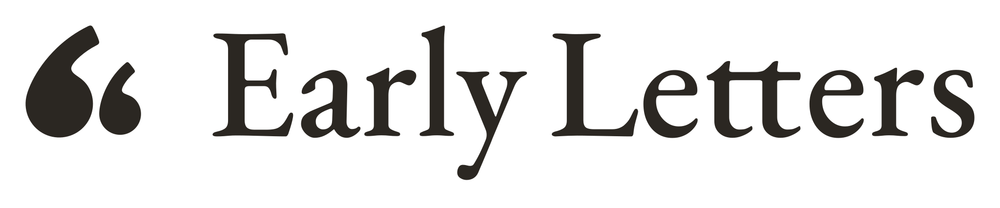
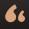
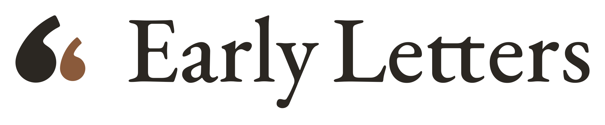
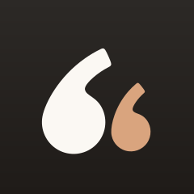

Colour


Grayscale
One colour (1-bit)
Left to right: colour, grayscale (what a person who sees only tone gets), one colour (print, emboss, forced high contrast). Same files, filtered in the browser.





